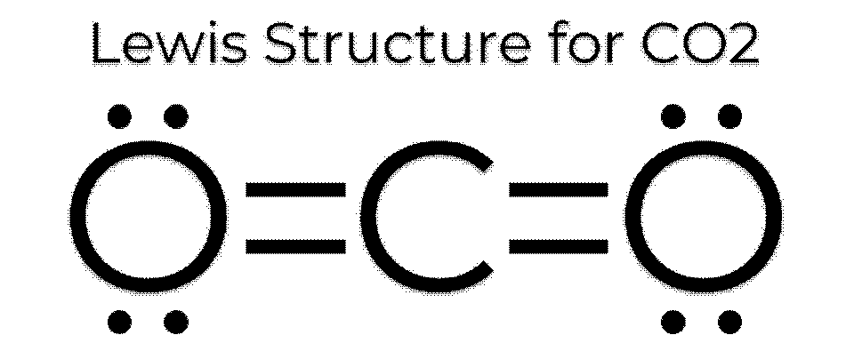

해설 2
2-가
\[\text{CaCO}_3\text{(s)} + 2\ \text{HCl(}aq\text{)} \rightarrow \text{CaCl}_2\text{(}aq\text{)} + \text{H}_2\text{O(}\ell\text{)} + \text{CO}_2\text{(}g\text{)}\]
2-나
이산화탄소 몰수 = \(\text{CaCO}_3\) 몰수 = 10 g / 100 (g/mol) = 0.1 mol
이산화탄소 기체 몰분율 = \(0.1 / (2.4 + 0.1) = 1/25 = 0.04\)
전체 압력이 \(P\)일 때, 이산화탄소 기체의 부분 압력 = \(0.04P\)
2-다

2-라
이산화탄소는 선형 구조이므로, C=O에 의한 쌍극자 모멘트가 서로 상쇄되어 무극성 화합물이다. 하지만 이산화황은 문제에서 설명했듯이 굽은 구조이므로, S=O(S-O의 결합을 이중 결합으로 나타내든 단일 결합으로 나타내든 상관없음)에 의한 쌍극자 모멘트의 합으로 인해 극성을 갖는다. 따라서 이산화황은 분자 간 상호작용 중 쌍극자-쌍극자 상호작용이 발생하며 뿐만 아니라, 황의 원자번호가 탄소보다 크므로 더 많은 전자를 가지게 되어 분산력 또한 크다. 이러한 이유로 인해 분자 사이 상호작용이 이산화황이 이산화탄소보다 크게 되어 끓는점은 이산화황이 더 높다.